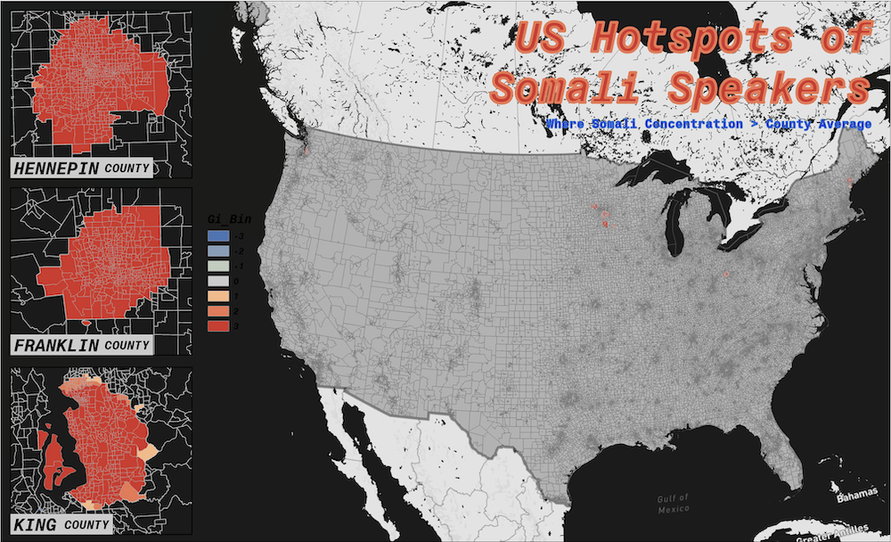
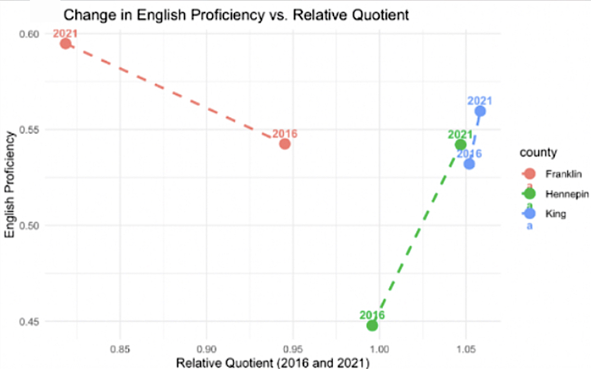
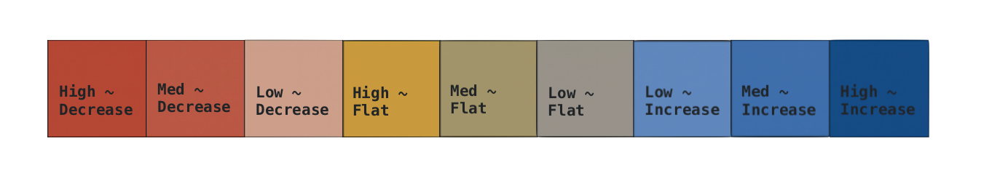
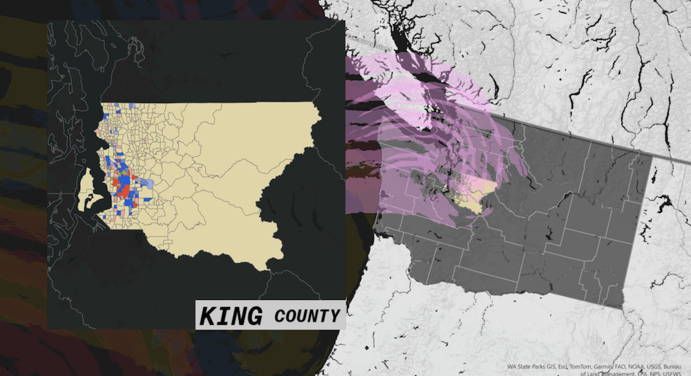
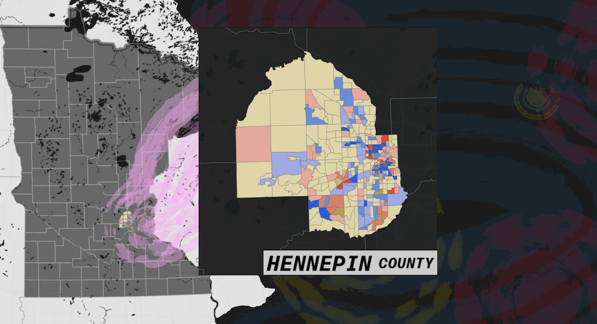
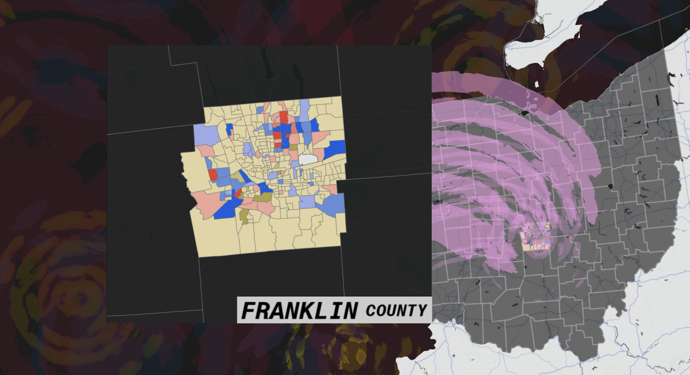

Explore on Github
The Project
This project explores the relationship between ethnic concentration and English language proficiency trends (as a means of acculturation and integration) by focusing on Somali immigrants in the United States. Ethno-religious enclaves are known to be hubs for businesses and cultural maintenance, thus the focus on an immigrant population that is more uniform in language, religion, and culture than other ethnic groups of similar size and migration pattern.
The goal of this project is to visualize and quantify language adoption as an aspect of acculturation and highlight contributing factors that may accelerate or slow such adoption – specifically geographic comparisons on concentrated vs. dispersed populations. This was investigated through a case study, asking the question: Does the spatial concentration of Somali residents influence English language proficiency over time?

National Hotspot Analysis mapping census tracts with the highest concentration of Somali residents:
The tracts in the US where the Somali population within each tract was greater than the broader county’s average.
Research in Context
Classic spatial segregation theories suggest that ethnic enclaves prevent or slow language proficiency. This study, though hyper-focused to one specific ethnic and language group, challenges these theories by directly testing whether tightly clustered Somali populations demonstrate slower or faster growth in English proficiency.
Why Somali as a Population of Interest?
There is limited research that focuses on African immigrant populations at the tract level and
studies their communities through socio-cultural trends. English proficiency is a variable only
captured at the tract level for some indo-European, Middle Eastern, and East Asian languages;
quite surprisingly, African and indigenous languages are not captured at any level more granular
than at the state. To estimate English proficiency specifically amongst African immigrants at the
tract-level, proportional proxies based on population were calculated using the ACS
“Other languages” categories: “Other Languages,” “Other Languages; speaks English ‘very well,’” and
“Other Languages; speaks English less than ‘well.’
Somali as a language is ethnolinguistic,
meaning it is practiced exclusively by and tied directly to Somali people. Somalia is one of few
African nations that has a singular dominant language, and potentially the only one that can be
benefit from this proxying method. Ethno-religious enclaves are known to be hubs for businesses
and cultural maintenance, thus the focus on an immigrant population that is more uniform in
language, religion, and culture than other ethnic groups of similar size and migration pattern.
This project is best understood when situated amongst related literature. Immigrants Learn English: Immigrants’ Language Acquisition Rates by Country of Origin and Demographics since 1900 by the CATO Institute was a project that was especially useful in relating spatial theory to language and assimilation.

Change in English Proficiency Relative to Somali Concentration
Methodology
Deeper methodology steps and code can be found on the github repository.
Almost all the preliminary workflow was done in RStudio (API authenticating, crosswalking census tracts, creating custom data frames and cleaning ACS variables, and exporting csv files).
ArcGIS Pro was utilized to run geoprocessing tools (hotspots) to identify enclaves and then create maps based on cleaned data (as well as bridge GEOIDs and FIPS codes)
To begin data acquisition, an API key was requested and ran through the Census. Because the Census does not capture specific African languages, a proxy using their Somali ancestry variable with their Amharic, Somali, and other Afro-Asiatic languages variable. Differences in county populations – both for Somali communities and the total population – were weighted by taking proxy estimates and dividing by the total Somali population at the county level To learn more about language proxies, refer to Why Somali as a Population of Interest?
Three segregation indices were utilized per tract and county for both time periods, and were instrumental in the creation of an aggregated concentration category:
- Dissimilarity Index (evenness of Somali vs. non-Somali distribution)
- Isolation Index (exposure to Somali co-ethnics)
- Entropy Index (linguistic heterogeneity)
A standardized “concentration score” was made to classify tracts and counties into low, moderate, or high categories.
Crosswalking
Because this project was estimating the change in language proficiency across time (2010-2016) and (2017-2021), uniformity in geographical tract information was required. Between these set of years, some tract boundaries were redistributed within each county, so census tracts from 2020 boundaries were crosswalked to 2010 tracts (visit IPUMS NHGIS to learn more about crosswalking).
The updated crosswalked geographic boundaries for 2017-2020 were then utilized for analysis.
Results
The following maps (as well as some statistical analysis) showed that Hennepin County had the most highly concentrated Somali population, the only across all counties and years to be categorized as ‘high,’ and showed the largest increase in English proficiency from 2011 to 2021.* Visual analysis confirms that moderate-to-high concentration areas exhibited variable but more positive proficiency shifts, more likely within tracts themselves with high concentrations.
* A +9.42 percentage point increase. Franklin and King showed smaller gains, +5.28 and +2.65 respectively


King County

Hennepin County.

Franklin County.
Reflections and Analysis
This project was revealing, and challenged original assumptions about the relationship of ethnic enclaves and language adoption. Qualitative research reveals an almost obvious answer to explain the results: more concentrated immigrant and ethnic communities are more likely to be the focus for public and non-profit resources for language learning services; (this is compounded when considering immigrant enclaves are more likely to be income deficient and face higher rates of poverty: further reason for focused social safety net services). Hennepin County as a case study shows that their comparatively large gains in English proficiency in addition to period-period increase in Somali concentration may facilitate access to English learning opportunities, not deter.
More research into these county’s as case studies is necessary for further illustrating the relative impact of each concentration; relevant investigations would include comparing the prioritization of language learning services in funding distribution relative to state budgets, and the relative population of Somali immigrants compared to other major immigrant populations. These steps will mitigate the heuristic (though empirically sound) classifications for concentration thresholds.
Future Iterations
The original research question sought to investigate how spatial concentrations of ethnic groups influenced language assimilation amongst refugees and immigrants post-crisis. Immigrating can be a long tedious process. Focusing on populations that likely came as refugees (by centralizing on the influx of immigration during–post conflict), may provide meaningful insight into research on ethnic enclaves that initially had less incentive or immediate expectation to learn English as compared to immigrants who may have prepared or have the motivation to learn English in their process of immigrating.
This comparative analysis of lanugage shift patterns should concentrate on populations with a distinct language or clear refugee/immigration influx.
Populations of interest:
- Syrian (recent arrival)
- Vietnamese (long established)
Supporting Literature
- Language Assimilation Today: Bilingualism Persists More Than in the Past, But English Still Dominates
- Immigrants Learn English: Immigrants’ Language Acquisition Rates by Country of Origin and Demographics since 1900
- Immigration & Language Diversity in the United States
- Language Diversity and English Proficiency in the United States
- The Dimensions of Residential Segregation